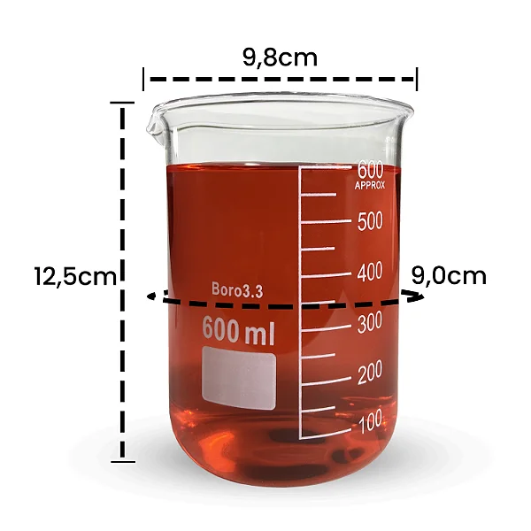
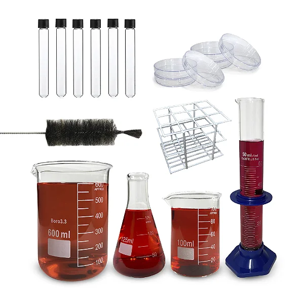

Nossos Produtos de Laboratório
-

Becker de Vidro
Becker de vidro borossilicato de alta qualidade, ideal para medição e mistura de líquidos em laboratório. Diversos tamanhos disponíveis.
Ver detalhes -

Frasco Erlenmeyer
Frasco Erlenmeyer cônico, perfeito para titulações, aquecimento e cultura de microrganismos.
Ver detalhes -

Proveta Graduada
Proveta graduada de vidro ou plástico, para medição precisa de volumes de líquidos. Base estável e graduação clara.
Ver detalhes -

Kit Essencial de Laboratório
Kit completo com os principais itens para laboratório, incluindo becker, erlenmeyer, proveta, pipetas e mais. Ideal para estudantes.
Ver detalhes